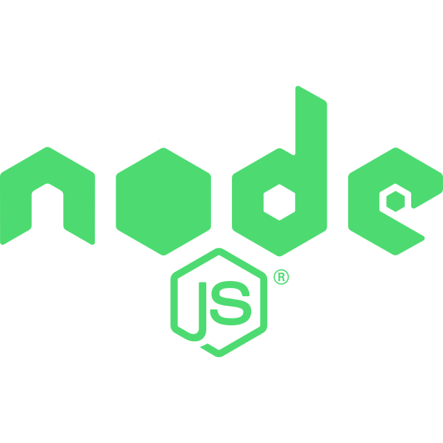
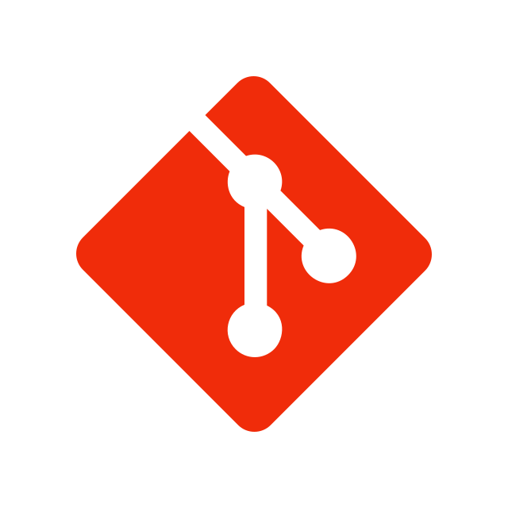
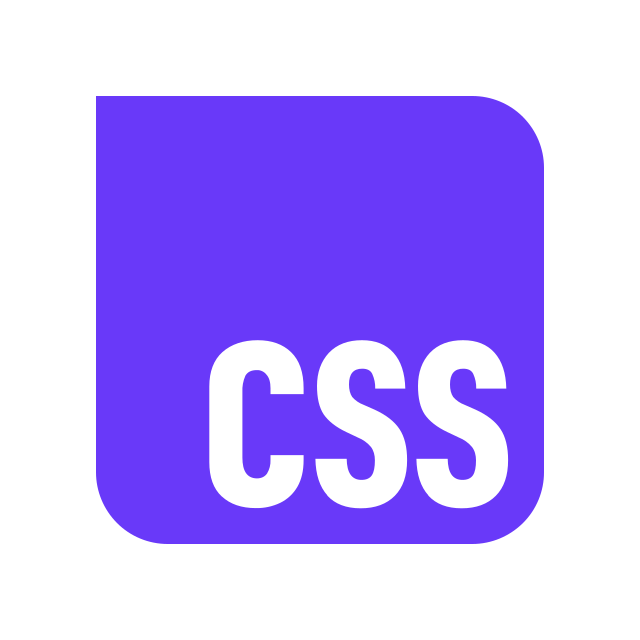
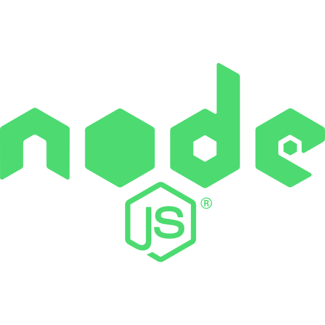
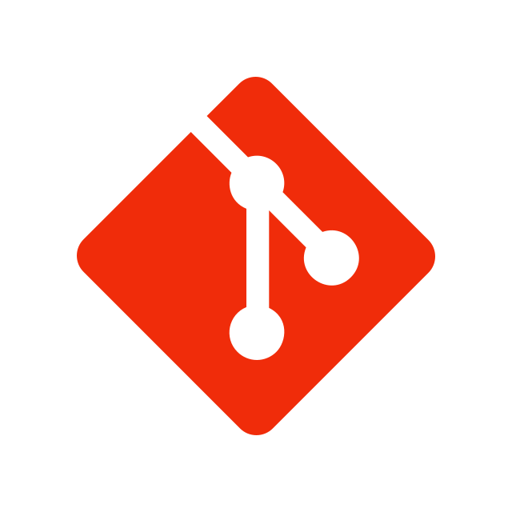
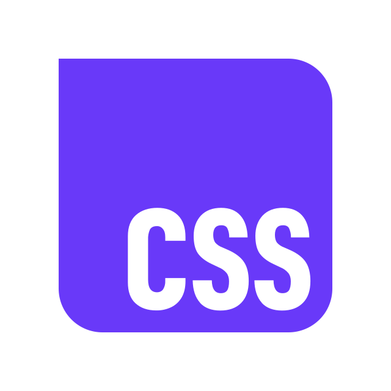

Hi, I'm Tochukwu E. Mgbe (ChukS)
Front-end Architect & Designer — I craft accessible, performant interfaces.
I build thoughtful UI systems and delightful web experiences using modern frontend tooling. I balance design and engineering to deliver products that feel polished and perform reliably.
About Me
I'm a front-end developer focused on building maintainable, accessible interfaces. My work blends thoughtful visual design with pragmatic code. I enjoy component-driven workflows, design systems, and turning complex problems into simple, usable solutions.
Selected Expertise
- Responsive UI & design systems
- React, component architecture
- Performance & accessibility
- Figma-to-code workflows
 





My Process
I start with research and prototypes, iterate with user feedback, and ship using component-driven patterns. The goal: fast, accessible, and beautiful experiences that scale.